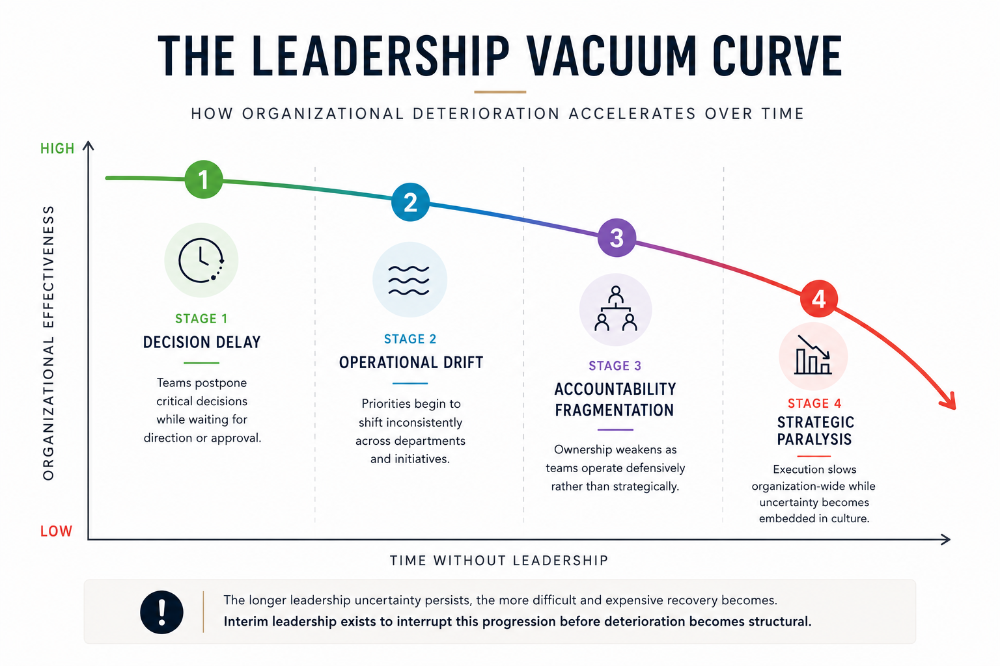

Interim management for moments where continuity matters more than perfection
Organizations rarely stop completely during periods of transition, uncertainty, crisis, or leadership changes.
First, decisions slow down. Then, coordination becomes fragmented. Finally, operations begin to lose clarity.
Interim management exists to restore continuity, stabilize operations, and protect organizational momentum while long-term leadership decisions are carefully developed.
It is not consulting
Interim management is not observation from a distance. It is direct operational involvement during times when an organization needs continuity, executive clarity, and calm leadership under pressure.
Whether it is accelerated growth, executive transition, operational overload, or crisis management, the goal remains the same:
Protect continuity while the organization regains clarity.
The cost of waiting

This curve illustrates how a leadership vacuum creates a progressive decline: first, agility in decision-making is lost, then strategic alignment weakens, and finally, operational capacity erodes. Timely intervention halts this inertia.
Immediate intervention for organizations that cannot halt execution.
Request immediate interventionInterim Leadership as a Strategic Advantage
An analysis of how interim leadership preserves execution, stability, and decision-making capacity during times of organizational uncertainty.
Sergio Lubezky is an interim executive and transformation leader with over 30 years of experience supporting organizations through operational complexity, transition, and organizational change across Mexico and Latin America.
Recognized for his ability to integrate rapidly into teams and execute calmly under pressure, his work focuses on preserving operational stability while long-term leadership decisions are carefully developed.